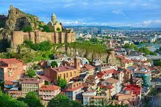

Situated at the crossroads of Eastern Europe and Western Asia, the country of Georgia is a gem in the South Caucasus. Known for its ancient history, warm hospitality, and breathtaking landscapes, Georgia has become an increasingly popular travel destination.
Tbilisi is the capital and largest city of Georgia. It has a history that spans over 1,500 years, and its name is derived from the Georgian word meaning warm. Legend has it that King Vakhtang Gorgasali discovered the city hot springs while hunting, leading to the establishment of Tbilisi.
The heart of Tbilisi is its charming Old Town, characterized by narrow winding streets, colorful houses with wooden balconies, and a mix of architectural styles reflecting the city's diverse history. Meander through the cobblestone streets to discover hidden gems, boutiques, and traditional Georgian restaurants.
The Caucasus mountain range stretches across a vast area, and the Georgian segment is known for its rugged beauty. The mountains serve as a natural border between Europe and Asia, and their peaks are often covered in snow, creating a stunning contrast with the green valleys below.
Georgian cuisine is a culinary delight that reflects the country's rich history, diverse geography, and cultural influences. Known for its flavorful and aromatic dishes, Georgian food is a unique blend of herbs, spices, and fresh ingredients. Here's more about the delicious world of Georgian cuisine
You should eat these:
Georgia has a deeply rooted and ancient wine culture that spans thousands of years, making it one of the oldest wine-producing regions in the world. The country's traditional winemaking methods, unique grape varieties, and cultural significance contribute to a vibrant and distinctive wine culture. You should learn more about these: